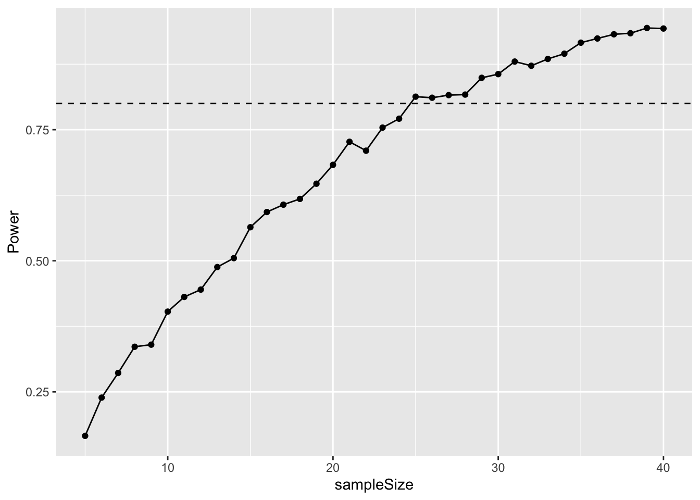

Chapter 22 Power analysis by simulation
This chapter will first focus on how we can answer questions like “what sample size should I use in my experiment?” and “with this sample size, what difference could I detect?”
As you learned in the chapters on t-tests and ANOVA, the detection of a significant difference between treatment groups (if there is one) depends on two things: (1) the actual difference between mean values for the groups (the “signal”) and (2) the amount of variation there is in the groups (the “noise”). When there is a lot of noise it is hard to detect the signal.
In most cases we will already have some idea about what to expect when doing a study. Previous work on similar topics, or pilot studies, will have given us an idea of typical values for the response variable, and will give us a ballpark estimate of how much variation to expect. This information can be used to conduct a power analysis by simulation.
The basic idea of this approach is to simulate the experiment, by drawing random numbers from appropriate distributions, before actually carrying out the experiment.
22.1 Type I and II errors and statistical power
Before setting out to run an experiment or an observational study is is natural to wonder “how much work do I really need to do here?” In other words, “what sample size do I need in order to address the hypothesis?
Similar questions are also relevant after running an experiment. For example, imagine you have run an experiment that failed to find a significant effect of your treatment. There are two explanations for this finding (i) there really is no effect of your treatment; (ii) there is an effect of your treatment but you did not have enough power to detect it. So the question arising is: “what difference could you have detected, based on the results you have?” The answer could be “Based on my experiment I can see that if there is really a difference it must be smaller than \(X\)” and/or “I would need to increase my sample size to X to detect a difference if the difference is \(Y\)”
These type of questions are closely related to the two types of error that one can make when testing hypotheses:
- A Type I error is the rejection of a true null hypothesis. For example, when there truly is no effect of an experimental treatment, but you detect one in error.
- A Type II error is the failure to reject a false null hypothesis. For example, when there truly is an effect of an experimental treatment, but you fail to detect it.1
The probability of making these errors depends on the statistical power of your study. Statistical power ranges between 0 and 1 and, for a simple hypothesis test, it is defined as the probability that the test rejects the null hypothesis (\(H_0\)) when the alternative hypothesis (\(H_1\)) is true. In other words it is the probability of NOT making a Type II error.
For example, a power of 0.80 means that you have an 80% chance of correctly detecting that \(H_1\) is true and a 20% chance (1.0-0.8 = 0.2) of making a Type II error. As power decreases, the probability of making a Type II error increases.
22.2 What determines statistical power?
Statistical power is determined by several factors including the actual effect size, the natural variation in the effect size, the sample size in the study, and the (arbitrary) criterion you have chosen for significance:
- The magnitude of the actual effect of interest. If the effect under investigation is very small then it will be harder to detect (i.e. the power to detect it will be small).
- Variation. Variation in the data introduces noise into the statistical test. Where there is large amounts of natural variation it is harder to detect significant effects (i.e. the power to detect it will be reduced).
- The sample size. Larger sample sizes reduce the amount of sampling error and therefore reduce the amount of “noise” in the data. Therefore large sample sizes increase power to detect a difference between groups.
- Sampling error can be reduced by improving the precision of measurements. Therefore power can also be increased by improving measurement precision.
- The significance criterion. We normally use p = 0.05, but this is arbitrary. We could increase the power of the statistical test by using a more relaxed criterion e.g. p = 0.10.
There are several ways to estimate statistical power, required sample sizes etc. In this chapter we will look at one of them – power analysis by simulation. This is best communicated using a simple example.
22.3 An example of calculating statistical power.
In an experiment, researchers would like to test a hypothesis that a high protein diet increases the size of adult insects from a pest species. Previous work has shown that the average size on a normal diet is 12mm with a standard deviation of 3mm.
Remember to load the dplyr, magrittr and
ggplot packages, and to set your working directory
correctly.
We can simulate a distribution of measurements from this distribution using the rnorm function. This draws n numbers from a theoretical normal distribution with a particular mean and standard deviation (sd). For example:
## [1] 16.11288 10.30591 13.08939 13.89859 13.21280 11.68163 16.53457 11.71602
## [9] 18.05527 11.81186Because this is a random process your results will be different (and they will be different each time you run the code).
Suppose that other studies on a different species has shown that a high protein diet leads to a 20% increase in size. This means that we expect our treatment group to have a body length of 12 \(\times\) 1.2 = 14.4mm. If we assume the standard deviation will be the same, we can simulate a distribution for a high protein treatment group in the same way as for the control group:
## [1] 18.16416 19.51226 17.04097 12.65537 13.89243 17.59434 16.55513 14.51473
## [9] 11.25101 15.03694Now we have two simulated samples, and we can conduct a t-test on those samples and store the result:
We can print this result to the screen like this:
##
## Welch Two Sample t-test
##
## data: control and treatment
## t = -1.7337, df = 17.976, p-value = 0.1001
## alternative hypothesis: true difference in means is not equal to 0
## 95 percent confidence interval:
## -4.3793101 0.4196255
## sample estimates:
## mean of x mean of y
## 13.64189 15.62173Or just get the p-value like this:
## [1] 0.100093622.3.1 The simulation
The idea with power analysis by simulation is to repeat this procedure many times (at least 1000) to estimate the probability that you get it right (that you detect a significant difference between groups when you know there is a difference2).
You have come across this sort of simulation approach before when we talked about randomisation tests. As before we will use the replicate function to repeatedly do t-tests on randomly generated data with the characteristics you select (i.e. sample size, mean, and standard deviation).
We first set up our simulation by defining the mean, standard deviation, and sample size of our simulated experiment.
Now we can “wrap” a t.test on simulated control and treatment data sets within a replicate function like this. Take some time to study this part of the script - it is important that you understand what it is doing. In this case the replicate command is telling R to repeat the t-test 5 times.
replicate(
5,
t.test(
rnorm(sampleSize, controlMean, sdValue),
rnorm(sampleSize, treatmentMean, sdValue)
)$p.value
)## [1] 0.0506748916 0.0004174904 0.0303818981 0.4768898365 0.0296402507Let’s repeat the t-test 1000 times so we can get a good idea of the number of times that the test correctly detects that there is a difference between the two groups.
I don’t want to print 1000 p-values to the screen so I will collect them in a vector called powerResults.
powerResults <- replicate(
1000,
t.test(
rnorm(sampleSize, controlMean, sdValue),
rnorm(sampleSize, treatmentMean, sdValue)
)$p.value
)I can now ask how many of the p-values stored in powerResults were less than 0.05.
## [1] 393So in this case, 393 of the 1000 tests were correct. The statistical power can be calculated by turning this into a percentage - i.e. Power = 39.3%.
We can ask what sample size do we need to get a better power, e.g. 90%, by increasing sample size incrementally. For example, here I increase sample size to 15:
controlMean <- 12
treatmentMean <- 14.4
sdValue <- 3
sampleSize <- 15 # Increased
powerResults <- replicate(
1000,
t.test(
rnorm(sampleSize, controlMean, sdValue),
rnorm(sampleSize, treatmentMean, sdValue)
)$p.value
)
(sum(powerResults < 0.05) / 1000) * 100## [1] 54.9The power has increased to 54.9%.
22.4 Summary
Simulation can be a powerful tool to help design and understand the results of hypothesis-based studies. The example above focuses on data that are normally distributed and where the test involved is a t-test. However, the same principles apply for other types of data. One can adapt the approach to use different distributions e.g. rpois for Poisson or rbinom for binomial. One can also alter the tests being done. This case study used a t.test but one could alternatively simulate the results of other ordinary linear models with lm or GLMs with glm.
22.5 Extending the simulation (optional, advanced)
This section is for illustration only. It is intended to show the
utility of using R to quickly address experimental design questions but
it goes beyond what you are expected to learn.I hope you find it
interesting nevertheless. To this you will need to add the
purrr library (using
install.packages(“purrr”)). This package includes a useful
function, map_dbl, which allows you to repeatedly apply
functions over many different input values. I use the double colon
(::) notation like this purrr::map_dbl to use
this function without the need to load the whole package.
One can extend the simulation to cover a range of sample sizes (or differences between treatments, or standard deviations etc.) using by turning the calculations of the t-test into a function, and then applying that function over a range of values.
I illustrate this below by varying sample size between 5 and 40.
# Set up a data frame for the simulation results
simulData <- data.frame(sampleSize = 5:40)
# Set basic values
controlMean <- 12
treatmentMean <- 14.4
sdValue <- 3
# Function to do the t-test
pwr <- function(n) {
sum(replicate(
1000,
t.test(
rnorm(n, controlMean, sdValue),
rnorm(n, treatmentMean, sdValue)
)$p.value
) < 0.05) / 1000
}
# map_dbl applying the function for every value of
# simulData$sampleSize
simulData$Power <- purrr::map_dbl(simulData$sampleSize, pwr)These results can then be graphed with ggplot.
# Plot the output
ggplot(simulData, aes(x = sampleSize, y = Power)) +
geom_point() +
geom_line() +
geom_hline(yintercept = 0.8, linetype = "dashed")
22.6 Exercise 1: Snails on the move
Your supervisor has collected pilot study data on the distance travelled by a particular snail species during one day. In this study the mean distance travelled was 7.4m and there was a standard deviation of 2.76m. There are two colour morphs of the snails: One is bright and colourful with a striking black spiral while the other is drab and kinda boring-looking. Your supervisor focused on the colourful snails, but assume that standard deviation is the same for both morphs.
For your masters project you hypothesise that the boring snail will cover more distance because it is less scared of visual predators and willing to expose itself to more risk while foraging. You don’t have a good feel for the difference, but you decide that a 25% difference between the morphs would be biologically interesting.
Simulate a t-test-based analysis in R to figure out what sample size would result in 80% power.
22.7 Exercise 2: Mouse lemur strength
Previous work on grey mouse lemurs (Microcebus murinus) has found that they are quite strong. They can lift and hold 10 times their own body weight!3
This work was done on prime-age animals. Researchers believe that older individuals will have experienced physiological senescence and that their strength will have deteriorated. The body weight of these lemurs is about 60grams. The prime-age animals could lift and hold 600grams with a standard deviation of 145grams.
A research institute has agreed to you carrying out this study for your masters project. They have 25 young age lemurs, but only have 8 old aged animals. You can assume the standard deviation is the same in both age classes.
What difference in strength could you reliably detect (with power >80%) with these sample sizes?
To remember this, think of the story about “the boy who cried wolf”. First the villagers believe the boy when there was no wolf (Type I error). Second, the villagers don’t believe the boy but there IS a wolf (Type II error).↩︎
You know there is a difference because you have set this difference!↩︎
Thomas, P., Pouydebat, E., Brazidec, M., Aujard, F., & Herrel, A. (2015). Determinants of pull strength in captive grey mouse lemurs Journal of Zoology DOI: 10.1111/jzo.12292↩︎